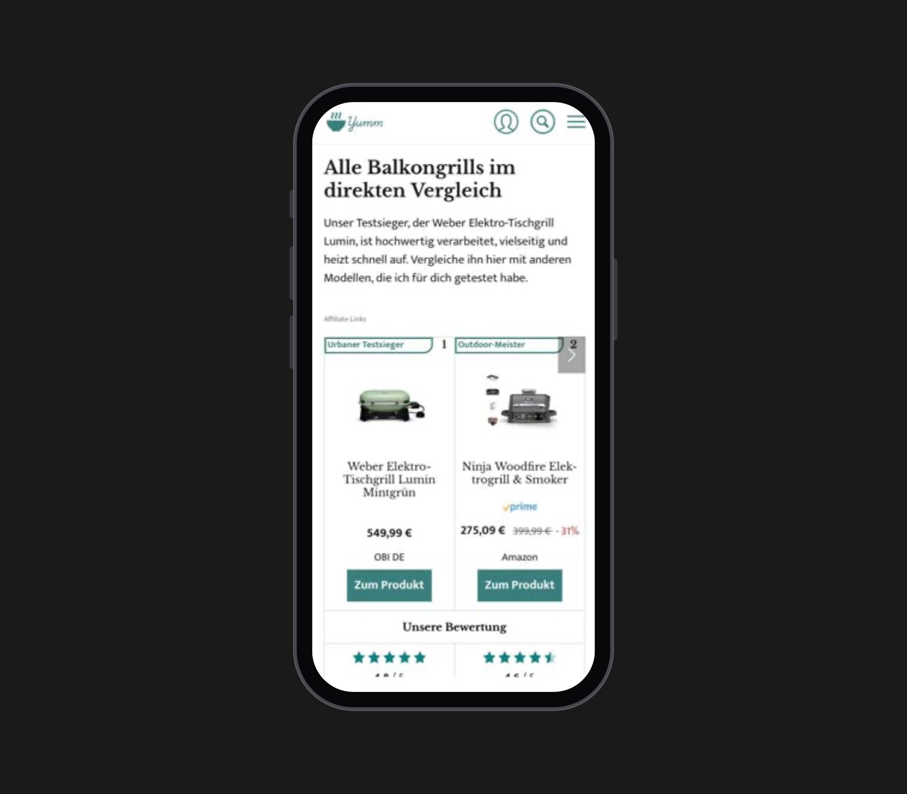
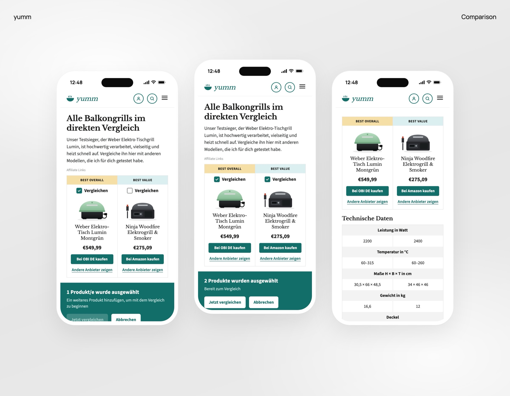
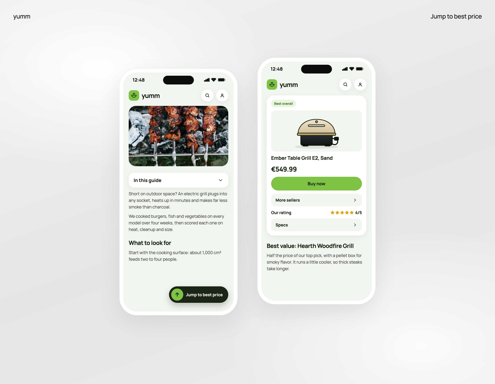
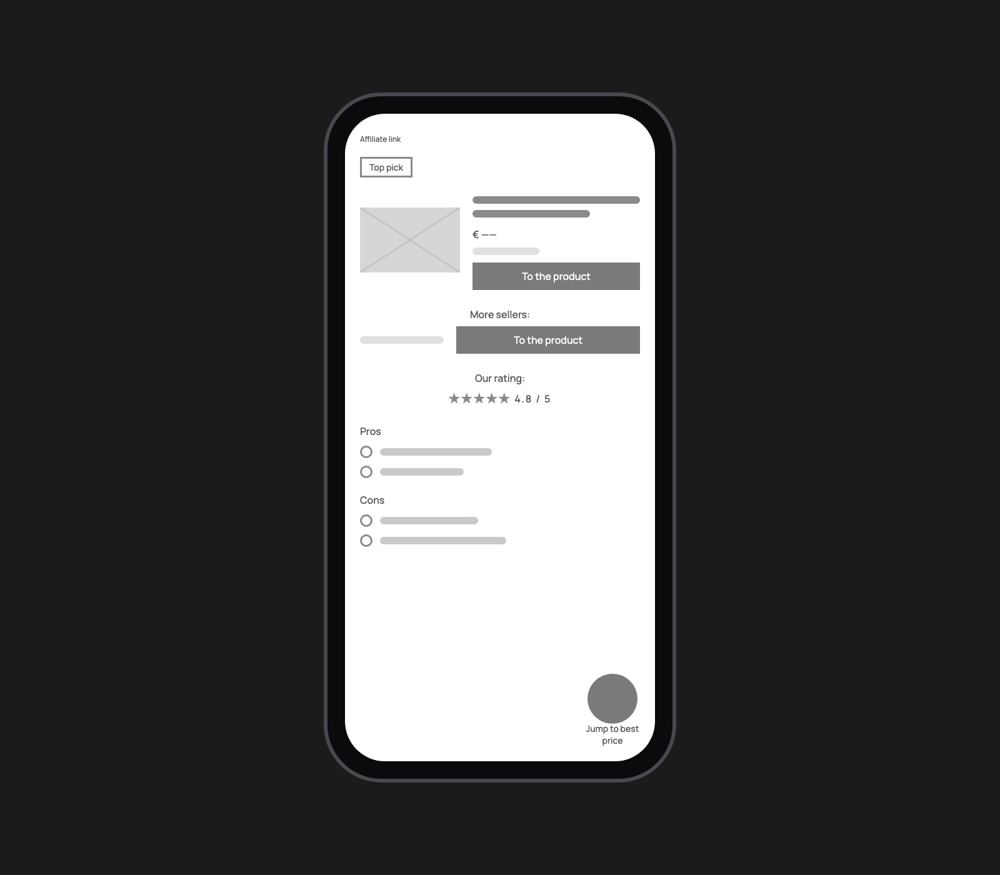
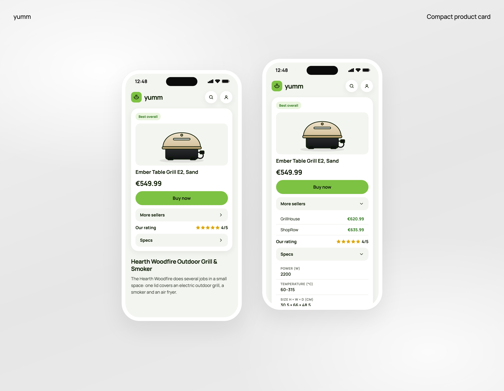

Media / Publishing · 2024
yumm
Optimizing an affiliate product page for trust and conversion
3 min read
Problem
yumm is a German food and cooking publisher that earns money through affiliate links in its buying guides. Its electric grill guide brought in search traffic from people with one question: which electric grill should I buy?
But every product card looked the same, buy buttons appeared before there was any reason to trust them, and on mobile the guide turned into a long scroll. People skimmed, hesitated at the links and left before reaching the lower-ranked grills, which cost clicks and affiliate revenue.
Research
I combined a heuristic evaluation against Nielsen's heuristics with interviews and a usability test. Participants, most of whom cook every day, had to find the best grill for a family of four, find the cheapest reliable option, and choose one they'd buy themselves.
- 25Participants
- 6.2%Buy button CTR
- €0.18Revenue per visitor
Participants liked the editorial tone and the detailed product information. The problems were hierarchy, trust and length: they couldn't tell the best, budget and premium picks apart, the links felt like advertising, and on mobile the decision sat too far down the page.
"Everything looks kind of the same, so I can't tell right away which model is actually the best."
"I'm not sure if this is an honest recommendation or just advertising."
Insight
People trusted the writing but not the ranking: the page asked them to click before it showed them why.
Making
A quick comparison at the top
I placed a comparison module near the top of the guide, with color-coded badges (Best Overall, Best Value) and checkboxes to compare two grills side by side in a spec table, instead of a long list of identical cards. Participants couldn't tell which grill was best, cheapest or premium, and asked to see the differences without reading every section.
InteractiveCompare two grills
Alle Balkongrills im direkten Vergleich
Best overall
Weber Elektro-Tisch Lumin
€549,99
Best value
Ninja Woodfire Elektrogrill
€275,09
Technische Daten
- Leistung in Watt
- 22002400
- Temperatur in °C
- 60–31560–260
- Maße H × B × T in cm
- 30,5 × 66 × 48,534 × 46 × 46
- Gewicht in kg
- 16,612
Rebuilt from my designs, in German as on the site. Tick “Vergleichen” on both grills, then compare.


A sticky "Jump to Best Price" button on mobile
A persistent button jumps straight to the top pick and its price, instead of buy buttons that only live inside each card. On mobile those buttons scrolled out of view, and participants said they had to scroll too far before they could decide anything.
InteractiveScroll, then jump to the best price
Das Wichtigste zu Beginn: Es gibt nicht den einen „besten Balkongrill“. Jeder Grillfan hat unterschiedlich viel oder wenig Platz, diese ganz besonderen Nachbarn und Grill-Lieblinge.
Wir haben diese Grills teilweise in der Stadtwohnung, auf dem Balkon, der Loggia und auf der Gartenterrasse getestet, um ihre Einsatzmöglichkeiten an verschiedenen Orten zu erproben.
Grillen auf dem Balkon ohne Ärger
Elektrogrills sparen Platz und Brennstoff und eignen sich daher besonders für das Grillen auf dem Balkon, aber auch unterwegs auf dem Campingplatz mit dem Wohnmobil.
Im Sommer können wir in der Stadt schon mit einfachen Modellen ohne großen Aufwand zum Grillen ins Freie gehen. Unsere Favoriten ermöglichen dies auch im Mehrfamilienhaus ohne Ärger mit Nachbarn.
So haben wir getestet
Alle Geräte mussten im Test nicht nur das obligatorische Würstchen, sondern auch Gemüse grillen. Wir haben Aufheizzeit, Temperatur und Reinigung verglichen.
Am Ende zählte, was auf einem kleinen Balkon wirklich wichtig ist: Platz, Rauch und wie schnell der Grill einsatzbereit ist.
Best overall
Weber Elektro-Tisch Lumin
€549,99
Weitere Modelle im Test folgen weiter unten im Artikel.
Rebuilt from my designs, in German as on the site. Scroll the article: the button appears once you're reading, and takes you to the top pick.

Compact product cards
Each card now shows the badge, product, price, one main buy button and the rating, with other sellers and technical data folded into accordions, instead of everything expanded at once. Large blocks of text made the page hard to scan and slowed decisions.
InteractiveOpen only what you need
Best overall
Weber Elektro-Tisch Lumin Montgrün
€549,99
ABC Inc.€620,99
OTTO€635,99
- Leistung in Watt
- 2200
- Temperatur in °C
- 60–315
- Maße H × B × T in cm
- 30,5 × 66 × 48,5
- Gewicht in kg
- 16,6
Rebuilt from my designs, in German as on the site. The card stays short until you open a section.


Outcome
- 48% → 68%Task success
- 6.2% → 12.5%Buy button CTR
- 2.1% → 4.3%Mobile conversion
- €0.18 → €0.36Revenue per visitor
More people reached the end of the guide: scroll depth past 75% went from 24% to 40%, and time on page rose from 1:42 to 2:35.
Some users still questioned the ranking, so next I'd show the testing criteria and scoring method, and add picks by need, like best for balconies, for families or under €100.
Walkthrough
The prototypes from this case study, joined into one article page: the comparison at the top, the article, and the Best Overall card further down.
Plays on its own, using the same rebuilt prototypes as above. Pause it any time.
Reading a grill comparison
Compare two grills
At the top of the article, tick Vergleichen on both grills, then open the side-by-side comparison.
Jump to the best price
Read on. The button appears once you're in the article and takes you to the top pick.
Open only what you need
On the Best Overall card, open Weitere Anbieter, then Technische Daten.